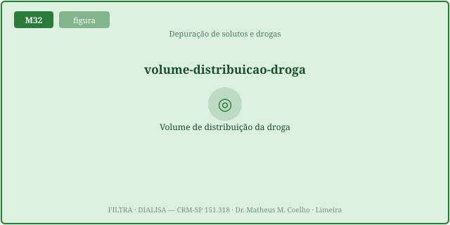
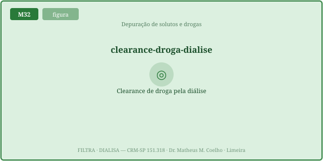
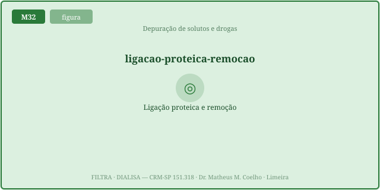
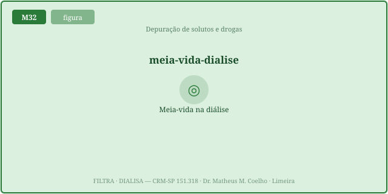

1 − exp(−K_dial·f_livre·fpm·t / (Vd·peso)). Drogas removidas pedem
dose suplementar pós-HD: vancomicina 15–20 mg/kg, gentamicina 1–1,7 mg/kg. É
homeostasia por máquina — repor o que a diálise levou.CREDITS.md (em curadoria).A diálise não vê a droga inteira. Ela só remove a fração que está
livre no sangue e que cabe na membrana. Por isso clearance alto do filtro pode não significar nada:
o que importa é onde a droga está (Vd) e quanto está livre (1−ligação). A fórmula viva do módulo é
fração removida = 1 − exp(−K_efetivo·t / V), com K_efetivo = K_dial·f_livre·fpm(PM) e
V = Vd·peso (Fig. 1–8).
PM baixo (<~500 Da) atravessa fácil em low-flux; high-flux remove médios. Ligação baixa = mais droga livre. Vd baixo = droga no sangue, ao alcance do filtro.


A droga ligada à albumina é grande demais para a membrana. Vale f_livre = 1 − ligação:
uma droga 95% ligada tem só 5% disponível para sair, por mais que o filtro depure.


Vd alto significa que a maior parte da droga está fora do sangue. O filtro só "vê" o pouco que passa pelo plasma → remoção ínfima mesmo com clearance máximo. É o caso da digoxina (Vd ~6).
Drogas removidas precisam de dose suplementar pós-HD, proporcional à fração removida: vancomicina 15–20 mg/kg (re-dose por nível), gentamicina 1–1,7 mg/kg, cefepime ajustado por TFG. É homeostasia por máquina: a diálise perturba o meio interno ao remover droga útil, e a re-dose restaura o nível terapêutico.
Sepse em paciente em hemodiálise (high-flux). Precisamos dosar antibiótico, e há um lítio tóxico no leito ao lado. O que a máquina remove — e o que ela não toca?
Peso molecular (baixo passa), ligação proteica (só a fração livre sai) e Vd (baixo = no sangue, alto = blindada).
f_livre = 1 − ligação. Só a droga não ligada à albumina é pequena o bastante para atravessar a membrana.
A membrana tem um corte: PM <~500 Da passa em low-flux; high-flux remove moléculas médias (até ~15 kDa). Acima disso, fica retido.
Volume de distribuição (L/kg): quanto a droga se espalha pelos tecidos. Vd alto = pouca droga no sangue → pouca ao alcance do filtro.
Mesmo com clearance alto, o filtro só remove o que passa pelo plasma. Se 95% da droga está no tecido, há pouco a tirar por passagem.
fração = 1 − exp(−K_efetivo·t/V), com K_efetivo = K_dial·f_livre·fpm(PM) e V = Vd·peso. É wash-out exponencial do pool.
PM ~1449 (médio): a membrana high-flux a deixa passar; a low-flux a barra. Daí a re-dose depender da membrana.
A re-dose pós-HD que repõe o que a sessão removeu: dose suplementar ≈ dose × fração removida (vancomicina 15–20 mg/kg; gentamicina 1–1,7 mg/kg).
A máquina perturba o meio interno ao remover droga útil; a re-dose pós-HD restaura o nível terapêutico — repor o que foi levado.
A curva mostra a fração removida por sessão caindo conforme o Vd sobe, para a membrana e o tempo atuais. Os marcadores ancoram lítio (Vd baixo, bem removido) e digoxina (Vd alto, blindada). O ponto laranja é a droga selecionada no Lab.
| Variável | Atual | Comentário |
|---|---|---|
| Fração livre (1−ligação) | — | só ela dialisa |
| Fator de PM (membrana) | — | 1 = passa, 0 = retido |
| Clearance efetivo da droga (mL/min) | — | K_dial·f_livre·fpm |
| Volume do compartimento (L) | — | Vd·peso |
| Fração removida na sessão (%) | — | ≥25% = relevante |
| Dose suplementar pós-HD (mg) | — | dose·fração |
| Meia-vida na diálise (min) | — | 0,693·V/K_ef |
| Padrão dominante | — | — |